Origen de transacciones - Transacciones |
En este formulario que se invoca desde el hipervínculo Transacciones contenido en el formulario orígenes de transacciones se registra la codificación y descripción de las distintas transacciones válidas para cada uno de los orígenes, relacionando para cada una, en caso de aplicar los costos asociados a la misma.
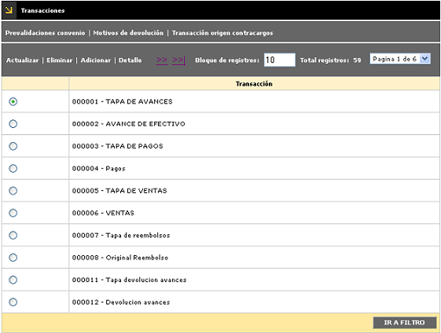
El formulario cuenta con un filtro mediante el cual el usuario puede hacer consultas selectivas bien sea por el código de la transacción original o la descripción de la misma.
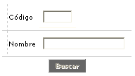
El formulario contiene las opciones Actualizar, Eliminar, Adicionar y Detalle. El formulario también contiene los hipervínculos Prevalidaciones convenio, Motivos de devolución y Transacciones origen contracargos que le permiten a la entidad definir las características propias y los parámetros adicionales que aplican para cada transacción en particular seleccionada por el usuairo, transacción que a su vez se encuentra asociada siempre a un origen específico.
Adicionar: Si el usuario invoca la opción Adicionar se despliega un nuevo formulario que se encuentra dividido en tres bloques de datos: Parámetros, Canje internacional y Validaciones.
Al ingresar al formulario por defecto se despliega siempre en el bloque Parámetros.
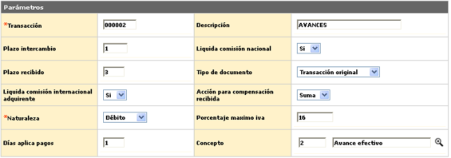
Descripción de campos
Transacción |
Campo numérico de hasta 6 dígitos en el cual se registra el código que identifica la transacción original que se está parametrizando y para la que se definen las demás condiciones del presente formulario. |
Descripción |
En este campo alfanumérico de 30 caracteres, se registra la descripción o nombre asociada a cada transacción original. |
Plazo intercambio |
En este campo numérico de 2 dígitos, en el que se indica el plazo estándar fijado por el operador, para que la entidad genere la transacción de devolución automática por no haber recibido respuesta oportuna a la solicitud de documentos. Aplica cuando en parámetros operativos se haya definido en el campo Plazo intercambio la opción Transacción. |
Plazo recibido |
Campo numérico de 2 dígitos, que aplica para aquellas transacciones relacionadas con la solicitud de documentos, y en el que se registra el plazo de que dispone la entidad para presentar o enviar la solicitud o reclamación a la entidad contraparte. |
Liquida comisión nacional |
Esta campo tipo combo permite seleccionar entre Si o No la transacción debe generar liquidación de comisión dentro del canje nacional. |
Liquida comisión internacional |
Campo que contiene un combo en el cual se slecciona Si o No la transacción debe generar liquidación de comisión dentro del canje internacional. |
Tipo de documento |
Este campo tipo combo del cual se puede seleccionar entre Nota crédito, Error de canje, Nota débito, Transacción no original o Transacción origen el tipo de documento que soporta la transacción. |
Acción para compensación recibida |
Campo diseñado para uso futuro, que posee lista de valores de la que se puede seleccionar entre Suma o Resta la implicación que tiene cada transacción dentro del canje enviado. |
Naturaleza |
Esta campo obligatorio contiene un combo con las opciones Débito, Crédito o No aplica para seleccionar la escencia de la transacción según corresponda. |
Concepto |
Campo con lista de valores en el cual se debe seleccionar el concepto de la transacción de acuerdo con la forma en que ésta afecta el saldo de la tarjeta. |
Días aplica pago |
En este campo numérico la entidad señala el número de días que deben transcurrir para afectar la cuenta de los establecimientos por los valores resultantes de los depósitos efectuados por éstos. |
Porcentaje máximo iva |
En este campo numérico de 3 posiciones enteras y 2 decimales, la entidad define el porcentaje de IVA que se autoriza liquidar como máximo en los comprobantes de movimiento manual y electrónico, en donde si el movimiento supera dicho parámetro se genera una causal de rechazo enviándolo al destino definido por la misma entidad. |
El segundo bloque de datos del formulario adicionar transacción se denomina Canje internacional y contiene los siguientes campos
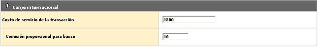
Descripción de campos
Costo de servicio de la transacción |
Campo numérico de 14 enteros y dos decimales dentro del que se define el valor que cobra el compensador por cada transacción internacional que viaje tanto en el canje recibido como en el enviado. Esto significa, que al valor total de la compra se le aplica el porcentaje definido en este campo, y al resultado obtenido se le aplica el indicador liquidación costos trx determinado en Parámetros franquicia, generando así el valor correspondiente a los ingresos por proceso. |
Comisión proporcional para banco |
Campo numérico de 3 enteros y 2 decimales, dentro del que se define el valor porcentual a aplicar a la comisión sobre el monto de la transacción y destinado a la entidad emisora de la tarjeta. Esto es, al resultado calculado en el campo inmediatamente anterior, se aplica el valor definido en este para determinar los ingresos por servicio de red. |
El tercer bloque de datos del formulario adicionar transacción se denomina Validaciones y contiene los siguientes campos
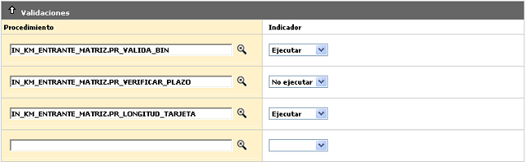
Descripción de campos
Procedimiento |
Campo con lista de valores en el cual se selecciona el programa que se va a ejecutar como parte del proceso de validaciones a las que será sometida la transacción original y de cuyo resultado depende en últimas el destino de la misma. El sistema permite definir hasta 20 validadores para una transacción los cuales serán ejecutados exactamente en el mismo orden en el que son ingresados en el formulario. |
Indicador |
Este campo tipo combo cuenta con las opciones Ejecutar y No ejecutar para indicarle al sistema si en el momento de validar la transacción original asociada al origen, se debe aplicar o no el validador. |
Actualizar: Si el usuario selecciona un registro e invoca la
opción Actualizar se despliega un formulario en el cual el único
campo NO modificable es la Transacción.
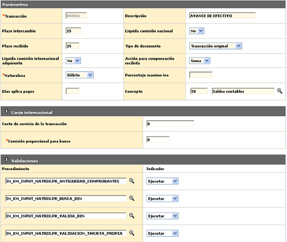
Detalle: Si el usuario selecciona un registro e invoca la opción Detalle se despliega un formulario con todos los datos del registro y en el cual ninguno de sus campos es modificable
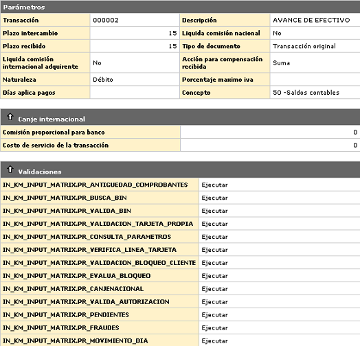
Prevalidaciones convenio : En este formulario se registran los diferentes validadores que aplican previamente a las transacciones de tarjetas que pertenecen a productos asociados a convenios. Los validadores aquí parametrizados aplican exclusivamente para el origen y transacción original seleccionados por el usuario al momento de invocar este formulario.correspondientes.
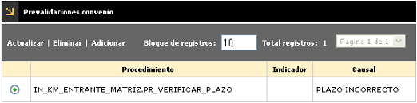
El formulario contiene las opciones Actualizar, Eliminar y Adicionar.
Adicionar: si el usuario invoca la opción Adicionar se despliega un nuevo formulario.
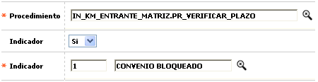
Descripción de campos
Procedimiento |
Campo con lista de valores en el cual se selecciona el programa que se va a ejecutar como parte del proceso de validaciones a las que será sometida la transacción original y de cuyo resultado depende en últimas el destino de la misma. |
Indicador |
Este campo tipo combo cuenta con las opciones Si y No para indicarle al sistema si en el momento de validar la transacción original asociada al origen, se debe aplicar o no el pre validador de convenio. |
Causal |
Campo numérico de 4 dígitos, en el que se registra la causal de rechazo de convenio asociada con el validador y que se le colocará a la transacción en caso que ésta no supere este paso. |
Actualizar: si el usuario selecciona un registro e invoca la opción Actualizar se despliega un formulario en el cual los campos modificables son Indicador y Causal.
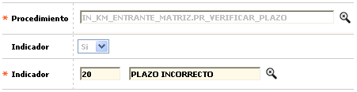
Motivos de devolución: En este formulario se permite asociar a cada transacción los diversos conceptos o motivos que pueden argumentarse dentro de los archivos en que viaje la información de una transacción en proceso de intercambio o disputa. Estos motivos deben corresponder con los estándares definidos por las franquicias.
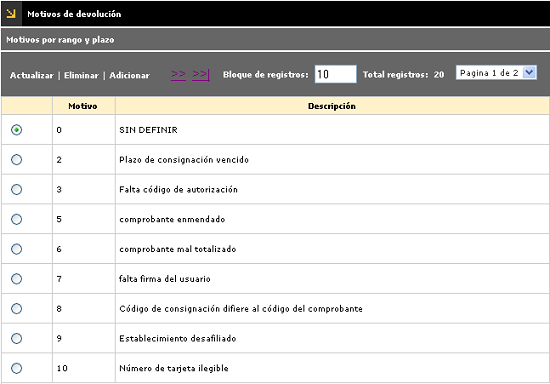
El formulario contiene las opciones Actualizar, Eliminar y Adicionar. También contiene el hipervínculo Motivos por rango y plazo.
Adicionar: si el usuario invoca la opción Adicionar se despliega un nuevo formulario.
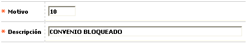
Descripción de campos
Motivo |
En este campo numérico de 3 dígitos, obligatorio, se registra el código que identifica el motivo por el cual una transacción puede ser devuelta o presentada a reclamación (intercambio) entre las entidades adquirente y emisora. |
Descripción |
Campo alfanumérico, obligatorio, que contiene el nombre o breve descriptivo del motivo o concepto asociado al código anterior. |
Actualizar: si el usuario selecciona un registro e invoca la opción Actualizar se despliega un formulario en el cual el único campo modificable es la Descripción.
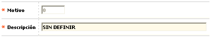
Motivos por rango y plazo: En este formulario se definen las condiciones para validar los plazos de intercambio de movimiento que ha sido asociado a algún motivo de devolución. Es importante tener presente que la información ingresada en este formulario aplica para el origen, transacción original y motivo devolución seleccionados por el usuario.
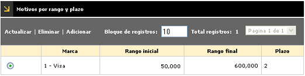
El formulario contiene las opciones Actualizar, Eliminar y Adicionar.
Adicionar: si el usuario invoca la opción Adicionar se despliega un nuevo formulario.
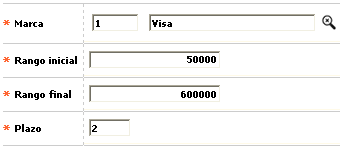
Descripción de campos
Marca |
Campo obligatorio que contiene una lista de valores de la cual se selecciona la franquicia sobre la cual se definirán las condiciones de validación de plazos para intercambio de acuerdo con el motivo de devolución. |
Rango inicial |
En este campo numérico de 14 posiciones enteras y 2 decimales, obligatorio, se define el monto de la transacción a partir del cual se validará el plazo para intercambio. |
Rango final |
Campo numérico de 16 posiciones enteras y 2 decimales, obligatorio, en el cual se define el monto final de la transacción hasta el cual se validará el plazo para intercambio. |
Plazo |
En este campo obligatorio, se define el tiempo asignado al comprobante para la validación del plazo de intercambio. Este parámetro aplica cuando en el campo Plazo intercambio de los parámetros operativos se ha seleccionado la opción Motivo. |
Actualizar: si el usuario selecciona un registro e invoca la opción Actualizar se despliega un formulario en el cual los campos modificables son Rango inicial, Rango final y Plazo
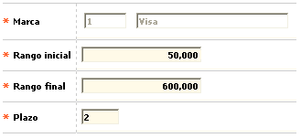
Transacciones origen contracargos: en este formulario se registra la información asociada con el proceso de contracargos, y en él se parametrizan las transacciones que es posible generar acorde con cada origen de movimiento y considerando el rol desempeñado por la entidad bien sea como emisor o adquirente.
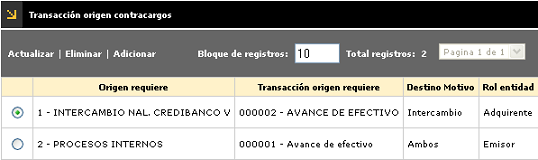
El formulario contiene las opciones Actualizar, Eliminar y Adicionar.
Adicionar: si el usuario invoca la opción Adicionar se despliega un nuevo formulario.
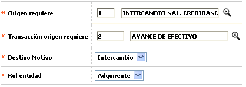
Descripción de campos
Origen requiere |
Este campo obligatorio posee lista de valores de la cual debe seleccionarse el origen o fuente de movimiento a parametrizar. |
Transacción origen requiere |
Campo obligatorio con ista de valores que permite asociarle a cada origen o fuente, las diferentes transacciones que pueden ser invocadas o argumentadas, de acuerdo con la etapa o estado del proceso de contracargo. |
Destino movimiento |
En este campo obligatorio tipo combo que contiene las opciones Diario, Intercambio o Ambas la entidad puede seleccionar el destino que se le debe dar a las transacciones. |
Rol entidad |
Campo obligatorio que contiene las opciones Emisor o Adquirente y en el cual se selecciona el rol o papel desempeñado por la entidad respecto de cada transacción y origen de la misma, el cual varía dependiendo de la etapa o fase en que se encuentre el proceso de contracargo. |
Actualizar: si el usuario selecciona un registro e invoca la opción Actualizar se despliega un formulario en el cual los campos modificables son Destino movimiento y Rol entidad.
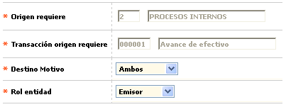